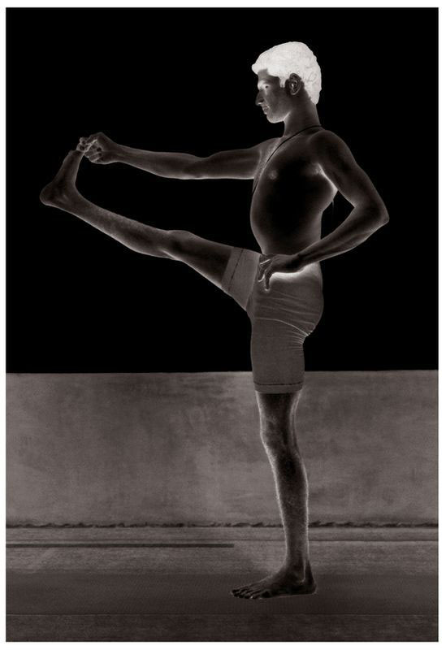

8. ARDHA BADDHA PADMOTTANASANA
This asana has nine vinyasas, the 1st, 2nd, 6th, and 7th of which are the states of the asana (see figure for 2nd vinyasa). A sadhaka, or spiritual aspirant, should practice it under the careful guidance of a Guru.
METHOD
First, stand erect. Then, doing puraka, place the right foot on the left thigh, pressing the heel into the lower abdomen, circle the right arm around the back, grasp the right big toe with the right hand, and place the left hand on the waist; this is the 1st vinyasa. Next, after doing rechaka slowly, bend at the waist, press the left hand to the floor by the side of the left foot, straighten the knee, and touch the knee with nose, doing puraka and rechaka slowly, as much as possible; this is the 2nd vinyasa. Then, doing puraka, lift the head only; this is the 3rd vinyasa. Next, doing rechaka and then puraka, stand up straight again, place left hand on waist; this the 4th vinyasa. Then, doing rechaka, release the right leg, which is in the Padmasana form, and straighten it; this is the 5th vinyasa. Next, place the left foot on the right thigh, bring the left arm around the back, take hold of the big toe of the left leg with the left hand, as outlined for the right, place right hand on waist, and stand, doing puraka; this is the 6th vinyasa. Then, as for the 2nd vinyasa and doing rechaka, bend forward, place the right hand on the floor by the right leg, which is straight, and touch the knee with the nose, doing puraka and rechaka as much as possible; this is the 7th vinyasa. Then, doing puraka, lift the head only; this is the 8th vinyasa. Next, doing rechaka and then puraka, place the right hand on the waist and stand up straight; this is the 9th vinyasa. (Aspirants should note that asanas such as this one which involve both legs are to be performed with the left leg as with the right.)
UTTHITA HASTA PADANGUSHTASANA

BENEFITS
The rectum, esophagus, and liver are purified by this asana. It also prevents gas from occurring in the stomach, prevents diarrhea, and quells the gas that arises from inappropriate food. Should gas occur, it wards it off. Ardha Baddha Padmottanasana can be practiced by anyone, including women of all ages, except those whose pregnancies have crossed into the fourth month.
THERE WILL BE DIFFERENCES IN THE STEADINESS OF ASPIRANTS’ RECHAKA and puraka while practicing the asanas described above. If they concentrate their minds on their breathing only, the state of an asana will be spoiled. If, on the other hand, they concentrate only on an asana’s state, their rechaka and puraka will be spoiled. Therefore, it must again be stressed emphatically that these asanas be learned under the guidance of an able Guru.